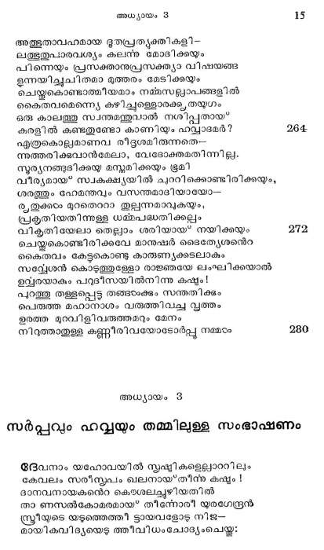
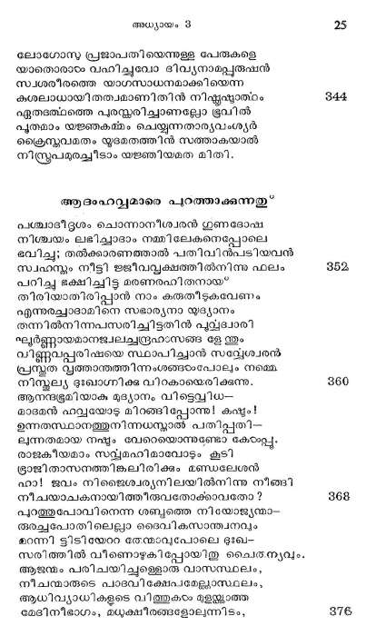

സര്പ്പവും ഹവ്വയും തമ്മിലുള്ള സംഭാഷണം
ദേപനാം യഹോവയില് സൃഷ്ടികളെലാററിലും
കേവലം സരീസ്പം ഖലനായ*തിന്മ കഷ്ടം !
ദാനവനായകനെറ കെടശലച്ചുഴിയതില്
താ ണസല്കോമരമായ* തീന്റോരീ യുരഗേന്ദ്രന്
സ്ത്രീയുടെ യടുത്തെത്തി ട്ടായവളോടു നിജ
മായികവിദ്യയെഴു ്തീവിധംചോദ്യംചെയ്തു:

രാമണീയക മന്യാദൂശമാം വിവേകമെ--
ന്നീവക ഗുണങ്ങഠംക്കു ധാമമേ! തോട്ടത്തിലെ
വൃക്ഷസഞ്ചയഫല മൊന്നുമെ ഭക്ഷിക്കായ*പാന്
രൂക്ഷമാ മാജ്ഞ നിങ്ങരംക്കീശ്വരന് നല്കീട്ടുണ്ടോ ?
നാരി ചൊന്നിതിനേവഃ മുദ്യാന്രൂമങ്ങളിന്
ചാരുവാം ഫലം ഞങ്ങടംക്കശിക്കാമെന്നാകിലോ
ആരാമമദ്ധ്യസ്ഥിതമായുള്ള ഗുണദോഷ--
ഭൂരുഹഫലം ഭക്ഷിക്കാവതല്ലൊരിക്കലം
സ്തൂശിക്കപോലു മാകാ; ലംഘിക്കില് മൂതിയുണ്ടാം
കശനമായിട്ടീശ നിങ്ങനെ യുൽഘോഷിച്ചാന്.
സര്പ്പമുത്തരമോതി: മററുള്ള മരങ്ങളി---
ലുഅലിച്ചീടും ഫലമൊക്കെയു മശ്യമെങ്കില്
നല്ലെഴ മിതിലുള്ള കായ്കള മശിക്കുകില്
ഉടംപരിതാപം വരില്ലയിരും നഷ്ടപ്പെടാം
ഹല്വ ചൊന്നിതിനേവഃ: മീഫല മശ്യമെങ്കില്
സല്പാലകനതു തടയാനിടയില്ല.
ക്ഷദ്ജീവിയില്പോലം കൃപയുള്ളവന് തന്െറ
പുത്രരാം ഞങ്ങംക്കിതു നല*കാതെയിരിക്കമോ?
കാതിനാന്വ്യാളം: നിങ്ങളെ തറിയുന്നു? ജഗ
നാഥനു തത്താളൃക്കെന്നുള്ള പേരുറ്പാകാന്
നന്മയൂു മുല്ക്കഷ്വ മന്യനുണ്ടാകും വഴി
കള്ലുവെച്ചടച്ചുപോം; സ്വാത്ഥമെ പുരുഷാത്ഥ
എന്തൊരു കാറവണ്ടാമിപ*ഫലം തൃജിച്ചെന്നാ-
ലെത്തൊരു ഗുണമുണ്ടാമിതിനെ യശിച്ചെന്നാല്?
ഏവ മത്തമ്പീമണി ചോദിച്ച നിമിഷത്തി--
ലാ വിലേശയപാശ നുരച്ചാനശങ്കിതം:
നിങ്ങടംക്ക സത്യജ്ഞാന മരുളം നേത്രമയ്യോ!
മങ്ങലാന്നടഞ്ഞുപോയിക്കഠിനാജ്ഞമൂലം..
നന്മയെന്നതുപോലെ തിന്മയയ മറിയേണ്ട
മമ്മമാണതമുലം ജ്ഞാനാഭിവൃദ്ധിയുണ്ടാം..
ജ്ഞാനത്തേ ക്ടവിഞ്ഞു നാം കാമിപ്പാനെന്തൊന്നുള്ള
ജ്ഞാനിയായ തീരുംപൊഴുതീശ്വരനായി ഭര്രേ!
നിജ്രൂയാസേന ദൈവനിലയിലെത്താമെന്നു--
ജള ത്തവാത്ത കാതിൽ തട്ടവേ ജഗന്മാതാ
സ്വത്ശത്തിന്വാതില് കണ്ടമട്ടിലങ്ങാനന്ദിച്ചാടം
ഭത്നനാം സപ്ലത്തിന്നു സ്വാഗതം ചൊല്ലീടിനാം
തീക്കമൊന്നുണ്ടതിനും പ്രത്യക്തി ലഭിക്കുകില്
തക്ടംവേണ്ടിതു നല്പമാന്റുമെന്നുറച്ചവം
ചോദിച്ചു: സഖേ! ഭവദ*ഗീരുപോല് പ്രവത്തിച്ചാല്
ഭൂതവുമുദക്കവുമിലലെന്നായ* വന്നേക്കുമോ ?
പാശ്വിയാം ഭൂജംഗേന്ദ്രന് ചൊന്നുഃ ഞാനൊരു സപ്ലം
വാശ്മീതയെന്നല്ലരിയാട്ടവും ഞങ്ങക്കില്ല.
എന്നുടെ സംഭാഷണശക്തിക്കു നിദാനമര്
സുന്ദരദ്രമഫലജഭോജന മൊന്നുമാത്രം.
തിര്യക്കാമെനിക്കിരര വൈശിഷ്യം വരുത്തിയ
വീര്യവല്ഫലം വ്യത്ഥമാവില്ല നിങ്ങടംക്കട്ടും.
അതിനാല് ഭയപ്പെടാതെടുത്തു ഭക്ഷിക്കവിന്
മൂതിയുണ്ടാകയില! സല്ഫലസമാസ്വാദാല്.
ടൈവതുല്യരായ* നിങ്ങ തീര്ന്നീടുമെന്നൊരീര്ഷ്യ
ടൈവചദിത്തത്തിലള്ള കാരണമാണിപ*ഫലം
ഭക്ഷിച്ചകൂടെന്നൊരു കല്പന നിഷ്കാരുണ്യം
സൃഷ്ടിച്ചതെന്നറിഞ്ഞു ബുദ്ധിയായ" പ്രവത്തിപ്പിന്.
സുരവിദ്വേഷിയുടെ വാഹനമാകും സര്പ്പം
പെരുതാം ഒപ്രഃഡിയോടു ചൊന്നൊരീ ഗിരം കേട്ട
ശരിയാണവനുടെ വാണിയെന്നവടംക്കള്ളില്
സ്ഥിരമാം ബോധമണ്ടായ* വളന്ര നിര്ഭാഗ്യത്താല്.
ഉടനേ മനസ്സാക്ഷി തടയാനാരംഭിച്ചു
പിടിയായ് സര്പ്പത്തിന്െറ വാണിയുമതും തമ്മില്
ചക്രിചൊന്നുള്ള ഭാവി നന്മയയ മതിലുള്ള
കര്ക്കശവിശ്വാസവും യോജിച്ചു വിപ്രകണ്ഠം
ഞെരിക്കും രണ്ടു ഘോരചണ്ഡാലതരന്നപോലെ
ഞെരിച്ച മനസ്സാക്ഷിഗ്രീവയേ ശക്തിപുവ്വം.
തല്ഫലമായി ത്തളര്ന്നടിയില് വീണുപോയി.
ചില്ധ്വനി ഗളിക്കുന്ന ശുദ്ധമാം മനോബോധം.
ദേവോക്തവിഗണനയാകിയ ധത്തുരവും
ഭാവിനിയായ നാശാവസ്ഥ തന് പിശുനമായ*
ഹാവ തന്നകക്കാമ്പാം പാഴ*പറമ്പിന്െറ മദ്ധ്യ--
ത്താവിനാഴിക മുളച്ചയര്ന്നൂ പഷ്ടിയോടും
ഇരുമന്ചങ്ങലയ്ക്ും ബന്ധിപ്പാന് വയ്യാമട്ടില്
വരമ്പുകടന്നവ ളാശയാല് രപ്രരിതയായ*
രോധത്തേപ്പുറങ്കാലാല് തട്ടിയങ്ങെറിഞ്ഞിട്ടു
വ്യാധന്െറ വലയിലേ ക്കോടുന്ന മൃഗംപോലെ
പാഞ്ഞിതു വൃക്ഷത്തിന്െറ യരികില് നിസ്റ്റന്ദേഹ-
മാഞ്ഞു തന് കൈകളതിന് കനിക്കായ* നിട്ടീടുമ്പോട
ഭൃഷ്ടിരമ്യവം ഭക്ഷണാര്ഹവു മതുപോലെ
ബുദ്ധിനല*കവാന് ശക്തിയുള്ളതു മെന്നുകണ്ട
നിഷി്ധവൃക്ഷത്തിന്െറ വിഷോല്പാദകഫലം
മുഴത്തരോഹംമുലം പറിച്ചു തിന്നീടിനാരം.
സേററനാം വഞ്ചകന്െറ വലയില്പ്പെട്ടീഫല-
മുറാകെടതുകത്തോടു ഭൂക്തിചെയ്യപ്പൊഴേതോ
വൈദൃതമായ ശക്തി യാപാദശിഖം വ്യപോി-
ചുദ്ദാമഭ്യം ഭൂമം വേദനയാമിയായ
ഭവിഷ്യല്ഫലങ്ങളെ യൂട്ദീപിപ്പിച്ചപോലെ.-
യവടോക്കു തോന്നീ, മാറാമണ്ടായി പ്രകൃതിക്കും.
ഹല്ല കൈയില് ൮്ൃക്ഷഫലത്തോടുകൂടി ആഭാമിന്െറ അടുക്ക ചെല്ലന്നുതു”
പെട്ടെന്നു വിരക്തിയുമുണ്ടായ*വന്നെങ്കിലും ത--
ന്നിഷ്ുനാം പ്രിയതമന്നാപ്പഴം കൊടുക്കുവാന്
മുതിര്ന്നു കയ്യിലേതാ നിടുത്തുകൊണ്ടുചെന്നു
പതുക്കെപ്പതിയുടെ സമീപത്തിങ്കലപ്പോഴ
ആദമായതു കണ്ടു ചോദിച്ചു: പ്രിയേ! നിന്െറ
ഭാസുരകരങ്ങളില് കാണുന്നതെന്താണാവോ ?
നിരുദ്ധവ്പക്ഷത്തിന്െറ ഫലങ്ങളല്േയതില്
വിരക്തി തോന്നാതവ പഠിച്ചതെന്താണു നീ?
സല്വേശ്വരാജ്ഞയേ നാം നിസ്സാരീകരിക്കുകില്
ഭദ്യഹമായ ദുഃഖം വരുമെന്നറിവില്ലേ?
അടങഞാലംഘനമാകം തീ്രപാപത്താലത്രെ
പ്രജ്ഞാവത്തുകളായ ഭൃതന്മാര് ദ്യോവില്നിന്നു
വീ ണതിഭയാനകമായുള്ള നരകത്തില്
താണിന്നും കിടപ്പുതെന്നോര്ത്തു കൊള്ളേണ്ടു നമ്മഠം
മത്തമാം ഗജത്തിനോ ടെതിര്പ്പാന് പിപര്ലിക
ശക്തമാകുമോ? തൃണം തരുവിന്നെതിരാമോ?
പ്രചണ്ഡവാതത്തോടു ഗുസ്തിവയുമോ തൂലം
രചിപ്പാന് നമുക്കൊല്ലാ ദൈവവിദ്വേഷടറ്ല.
അതിനാല് ദര്ശനീയമെങ്കില മിപ്പഴത്തെ
കളക; ശോഭകണ്ടു തിന്നുമോ തീക്കട്ടയേ?
ഇത്തര മാദിമര്ത്യസത്തമനുര ചെയ്തോ
രത്മവി ലമിതടുഃഖത്തോ ടോതിനാടം ഹറ്:
പ്രാണനായകാ! ഭവാനോതിന ഒമൊഴിയെന്െറ
മാനസം ഭയശോകവിഫവലമാക്കിടുന്നു.
മോഷ്ടാവുപോയി പ്പട്ടികരച്ചാലെന്തുഫലം?
നഷ്ടമായ* ജലം പിന്നീടെന്തിനു സേതുബന്ധം?
കല്ലനാവ്യതിക്രമപ്രഹിയില് ചാടിയിവം
സര്പ്പത്തിന് ചതിവാക്കാം ബാഹുവിന് തള്ളലിനാല്
വീ്യാല് സുകൃതമാം ശിരസ്ത തകന്പോയ്
താഴ്ചയുമായി സമ്യസതഭാഗ്യസരഖ്യങ്ങരംക്കം
മരണഭീതിയെന്നെ പ്പണ്ടിലാവിധമിപ്പോഴം
ഭരണംചെയ്തീടുന്നു സന്ധികടം തളതന്നൂ.

പശ്ചാത്താപജന്യമാം മൂര്ച്ഛയാ ലെന്നാത്മാവ
നിശ്ചയമഗാധമാ മിതളില് താഴുന്നു ഹാ!
എന്നേക്കുമൊന്നായിട്ട വസിപ്പാൻ നമ്മരംതമ്മില്
മുന്നമോതിയ കരാ ണനദുലം ഭഗ്നമായി
ഭുരിതപാത്രമാകമീ ഞാനും സുക്ൃതിനാം
വര! നാമിരുവരു മെവ്വിധം ചേന്നു വാഴും?
ഇരുളം വെളിച്ചവു മൊരുമിച്ചിരിക്കുമോ?
കനലും ജലവുമായ* യോജിപ്പു സാധിക്കുമോ?
ദേവാജ്ഞ ലംഘില്ചൊരു പാപിനിയാകുമെന്നെ
പാവന! നിന്നില്നിന്നു വേര്പിരിച്ചീടുമീശന്.
വയ്യൊട്ടും സഹിക്കവാനക്കഥയോത്തിടുമ്പോ--
ഉയ്യയ്യോ! കഷ്ടം! കഷ്ടം! ഞാനിതാ ഹതയായി !
എന്നുരച്ചവഠം നിജ ഭർത്തുമാനസത്തിനന്െറ
നിര്ണ്ണയഭിത്തിയോടുകൂടവേ താഴെവീണു.
ആദാം ഹപ്വയെ അനുശോചിച്ചു ഫലം ഭകഷഠിക്കുന്നതു
നയാഗ്രാനിര്ത്ഥരംപോല് കണ്ണനീര്വാര്ത്തു മുന്പില്
മയങ്ങിവീണുള്ളൊതീ വാത്സല്ൃയഭാജനത്തെ..
ഇയത്തയിലാതുള്ള ദുഃഖത്താല് വിയത്തു തന്
മിനുത്തകൈകാരംകൊണ്ട താങ്ങി യോതിനാ നാദാം:
എന്താണെന് പ്രിയേ! നീ താന് ചൊല്വതു ചെവികളി-
ലന്തരാ ലോഹമയനാരാചം തറയ്ക്കുന്നോ?
ദൈവശാസനനിഷ്ടനായിഴു മെന്നില്നിന്നു
പാപത്താലകന്നു നീ നശിപ്പാനൊരുങ്ങുന്നോ?
കാമിനീമണേ ! മമ മാനസ്ഭൂവില് തഴ--
ച്വാമയമെന്യേ പൂത്ത പ്രേമവല്ലരിയുടെ
കോമളപ്രസുനമേ! നിന്നുടെ വീ്ചയെത്ര
ഭീമമെന്നിരിക്കിലും നിന്നോടു വേറായ*നില്ലാന്
എനിക്കു കഴിവില്ല; സുഖടഃഖങ്ങളിലും
കനത്ത മൃതിയിലും നിന്നോടുകൂടിത്തന്നെ
മമ ജീവിതം പോക്കുന്നുണ്ട ഞാന്; സ്നേഹചിത്രം
മരണത്തിന്നുകൂടി മായിപ്പാന് കഴിവില്ല. ളള
ഈദൃശ മുരചെയ്ത ജായാസ്നേഹത്താല്പതി-
ഭൂതചിത്തനായ: നാരീഹസ്സംസ്ഥിതം ഫലം
പെട്ടെന്നു വങങ്ങിത്തിന്നു കടത്തി നരകത്തിന്
തട്ടലും താഴ*വാരവും മക്കക്കു സമ്പാദിച്ചു.
അത്ഭുതമല്ലി പ്രേമമാക്മമുണ്ടാകാം നിത്യ-
മിബ*ഭവനത്തിലേവമല്േയോ കാണുന്നു നാം
ജഡസംബന്ധമായ ഹാര്ട്ദത്തെ പ്രമാണിച്ചു
സഴഫുടമായ* മറക്കുന്നു ദൈവശാസനം മര്ത്യര്.
പാതോളത്തിലെ വിജയഘോഷം
ആടമന് തനെറ പത്ിയാകിയ ഹല്ലയേപ്പോ--
ലാദിദേവന്റ ശിഷ്ടി ലംഘിച്ചോരനന്തരം
പുവ്വദേവരാം സേററന്താനും തന്ഗണങ്ങളും
സല്ലാസുരസ്ഥാനമാം പാന്ഡമോണിയത്തിങ്കൽ
ഒന്നിച്ചുകൂടി നിജ തന്രസാഫല്യത്തിന്െറ
വെന്നിയേ സൂരിപ്പിക്കം പരമോത്സവമൊന്നു
നടത്തി സ്റന്തോഷിചച പാതാളലോകമാകെ.
പ്പൊടിപാറിടുംവണ്ണം വിജയഘോഷംലെയ്തം
ദീര്ഘകാലങ്ങടംക്കമന്പര്ഘ്യമാകിയ ടദേവ-
വാക്കുകേടംക്കാതെ മഹാമത്സരം സ്വര്ല്ലോകത്തില്
ആരംഭിക്കയാല് സകലേശ്വരനങ്ങനിന്നു
ഘോരമാം പാതാളത്തില് തള്ളിയ പിശാചങ്ങടം
ടൈവസ്ൃഷ്ടിയായുള്ള മര്ത്യനേ വഷളാക്കി
വൈരനിത്യാതന മീവിധത്തില് സാധിക്കയാൽ
സന്തൃഷ്ടമാനസരാ യാത്തുകൊണ്ടിരിക്കവേ.
ചിന്തിച്ചു ശിഷ്ടകാര്യസാധനോപായം ദേവന്.
സര്വശകതന് പറുദീസയില് എഴുന്നെള്ളുന്നതു*
പുരൂന്െറ ശരീരയാഗാര്പ്പണം മൂലം നാശ-
പാത്രമാമീലോകത്തേ രക്ഷചെയ*വാനും തന്റ
നീതിക്കു തൃപ്പിവരുത്തിടുവാനായും പരി--
തരാതാവു നിശ്ചയംചെയ്തിട്ട തല്ക്കാലത്തേക്കു
പരമാരാമമാകം പരദീസയില്നിന്നു
നരരെ ബഹിഷ്കരിച്ചിട്ട ദേവാരിയാകും
ഉരഗപ്രവീരനെ ത്തരസാ ശിക്ഷിക്കുവാന്
കരുതിബഴ്ഭൂരതലത്തേ ക്കെഴുന്നെള്ളിനാന് ദേവന്,
ഖെരുബാഖ്യങ്ങളാകും ദിവ്യജീവികളുടെ
മരുത്തിന്നൊത്ത വേഗമുള്ള പക്ഷങ്ങളിന്േല്
വാഹനമേറുന്നോരു സ്വര്ഗ്ഗീയരാജാവ തന്
മാഹാത്മ്യമ്പും പാദപല്വം പറുദീസില്
പതിപ്പിച്ചപ്പോരം പരമാനന്ദഭിതമായ*
ഭവിച്ച് ചരാചരജീവികളശേഷവും.
പൃക്ഷങ്ങംം പവനനാല് കമ്പിതശാഖങ്ങളാ-
യക്ഷീണാദരം തലകനീച്ചു വണങ്ങിതു.
പക്ഷികടം കളകള നിസ്വനവ്യാജേന സ--
ദ്വീക്ഷ്യനാ മീശന്നു നല് സ്വാഗതഗാനം പാടി.
മേഘത്തില്നിന്നു വര്ഷമുതിരുംപോലെ പച്ണ--
ശാഖികടം സുമങ്ങളെ ച്ചൊരിഞ്ഞു ധാരാളമായ
ആറുകം തരംഗമാം കരങ്ങടംകെട്ടിക്കൊണ്ടു
പാറയാം ബാറില്ക്കേറി മറിഞ്ഞു ചാടിപ്പാഞ്ഞു
നവപല്ലവങ്ങളാം ചെങ്കൊടിശാഖാഗ്രത്തി-
ലവബന്ധനംചെയ്ത ശോഭിച്ചു തേന്മാവുകടം.
പത്മരാഗത്തിനൊത്തോ രശോകപ്ണം, സ്വര്ണ്ണ-
പിദ്യതി കലര്ന്നുള്ള കര്ണ്ണികാരകസുനം,
മുത്തിന്നുനേരാം നൊച്ചിപ്പു വിവനിരന്നീടും
വിസഴതൃതശിലകളിന് സുവ്യക്ത പൃഷ്ടഭാഗം
ഇന്്രനീലാശുദ്യുതി വഹിച്ചു വിക്രേയരാം
സാന്ദ്രോച്ചയത്തില് സാമ്പിടപോലതുമിന്നി.
സ്ഥാവരജംഗമങ്ങളാകിയ സമസ്കവ--
മീവിധം നിവ്യളീകവിനയാദരപുവും
ഭംഗിയില് തയാറായി നിന്നിതു രാജാഗമം
തുംഗമോദേന കാത്തു പൌരന്മാര് നില*ക്ഷംപോലെ.
തട്ടദിനം വെയിലാറി ശ്ലീതമാരുതപോത-
മദ്യാനമെങ്ങും പരിക്രമണം ചെയ്യും വിധര
തോട്ടത്തില് സഞ്ചരിക്കും യാഹ്വയിന് ശബ്ദംകേട്ട
വാട്ടമോടൊളിച്ചാദ്യര് വൃക്ഷസഞ്ചയമധ്യേ
പാപം ചെയ്തീശ്വരന്െറ വിദ്വേഷം സമ്പാദിച്ച
പാപികടം തിരുമുമ്പില് നില്യാഞ്ഞതത്ഭുതമോ?
മോഷണക്കാരന് തൊണ്ടിസഹിതം പോലീസി ന്െറ
ഭീഷണമായോരഗ്രേ നിലക്കുമോ? ഭൂവിക്കില്േ?
ആദമേ യെവിടെ നീ? യെന്നു പുഛിച്ചു ടൈവ
മായതിന്നാദമാഖ്യന് കൊടുത്ത മറുപടി:
നഗ്നനാകയാലഹം താവക ശബ്ദംകേട്ട
പിഗ്നചിത്തനായ* ഭൂമമദ്ധ്യത്തിലൊളിച്ചുംപോയ*
ഭയത്താല് മുഴുവനും പറത്തുവരാതൃള്ള
ഭവത്തിലേവം ചൊന്ന സമയം ചോദിച്ചിശന്:
നഗ്നനെന്നാര നിന്നോടുരച്ച? വിരോധിച.
വൃക്ഷത്തിന് കനി തിന്നു കല്പന മറത്തുവോ?
ഉത്തരിച്ചടനാദാം: എനിക്ക കൂടായ* നിന്നാല്
ഭത്തയായുള്ള നാരി തന്നു ഞാന് തിന്നക്കനി
പപ്രഛ മഹേശസ്താവ *കിമിദം ത്വയാകാരി*
'സര്പ്പത്തിന് ചതിവാലെന്നവളും ചൊല്ലീടിനാടം.
ഉദിചചകോപത്തൊടു ഒന്ദുകത്തീന് ശിക്ഷ
വിധിച്ച പരമേശന് ഗദിച്ചാനുടനേവ
ദൈവം സര്പ്പത്തെ ശപ്ക്കുന്നുതു*
കമ്മേട മകരോ സ്ക്വം; തസ്മാദ് ഗാര്ഹികവന്യ--
പശൂനാം വൃന്ദാദ്ഭൂശം ശാപാഭിഗ്രസ്പോ ഭൂത്വാ
വക്ഷസാ ഗമിഷ്യസിഃ കിഞ്ച ത്വം യാവടജീവം
ഭൂതലോപരിസ്ഥിതധുളീ: സംഖാദിഷ്യസി
യോഷിത സ്കവാപി ച യുവയോര്വംശ്യാനാം ച
വൈരിതാം പരസ്പരം ജനയിഷ്യാമി നൂനം.
ത്വച്ഛിര്ഷം തസ്യാ പത്യ മാഹനിഷ്യതി; തദ്വ-
ഭാഹനിഷ്യസി തസ്യ പാദമൂലേപി ത്വഞ്ച;
ഹവ്വയെ ശപിക്കുന്നുതു*
ചൊല്ലിനാൻ സ്ത്രീയോടീശന് കള്ളനാ മസുരന്െറ
സൊങ്ളിനു ചായ”ച കര്ണ്ണം വിള്ളമാ റതേക്ഷണം
ത്വല്സുതിദുഃഖ മഹം വര്ദ്ധയിഷ്യാമി; തസ്മാത*
കഷ്ൂതഃബാഹുല്യേന സന്താനാന് പ്രസോഷ്യസേ
സ്വാമിനോ നി്ലീഭരയ സ്ഥാസ്യസി; തവ ഭത്താ
ശാസിഷ്യത്യനാരതം ത്വാമധീകാരമത്തഃ
ആഭാമിനെ ശപിക്കുന്നത്
ഉച്ചമാം നിനദത്തി ലാദത്തോടു രച്ചീശന്:
യച്ച പാദപഫലം ന്യസേധ മാദൌ ഭോക*തും
യോഷിതഃ കഥാം നിശമ്യാളംകഴഥാഃ തല്ഫലം ത്വം
തേനഹേതുനാ ഭൂമി രഭിശപ്പാസ്ി മയാ.
സം്ലിശ്യ യാവജ്ജീവ മസ്യാ സ്്വം ഭക്ഷിഷ്യതേ.
സംഭവിഷ്യന്തി തസ്യാം നാനാകണ്ടകളുമാഃ.
ക്ഷേതരഷേധീഭ്യ സ്വ ഭോജനം സംഗൃഹ്യതാം.
ഘമ്മാക്തമുഖതയാ ജോക്ഷ്യസി ഭോജ്യവസ്ത
ഭൂത്തികാ ഭവസി ത്വം; ഭൂത്തികായാജായഥാട
നിര്ല്ലീനോ ഭവിഷ്യസി മൂദി ത്വം പുനരപി.
ഇത്തരം ജീഷണത്തിലതി ഭീഷണമായ
കര്ത്തുഭാഷണ മാദംഹവ്വമാര് കേട്ടനേരം
വിറച്ചു ദേഹം കൈകാല് തളര്ന്നു നേതരദ്വയ-
മിരുണ്ടു; മൂര്ഷമിച്ചയ്യോ! തടിപോല് താഴെ വീണു.
സഹിച്ുകടാതുള്ള വേദനമൂലം വാവി--
ടുലചൂ മുറവിളിചൊഴുക്കി ബായ്ണം പിന്നെ
ഉരുണ്ടും കൈകാലുകളടിചചും കററമോത്തി-
ട്ടരണ്ടും നെടുതായ* വിത്തു മത്യഗ്രമാകും 264
നരകവേടനത ന്നകാലാസ്വാദം പോലെ
പെരിയ യാതനയില് വിരാമമെന്യേയവര്
ഞെരിഞ്ഞു പുളയുന്ന കാഴ്ച കണ്ടപ്പോഴിശ-.
അരുകീ ഗരിഷ്ഠമാം ഹൃദയാം ദയാവേശാല്.
ഉറച്ച തറയില് വീണ്ടറക്കെ കരയുന്ന
വിയും ശിശുവിനെ തെരിക്കെന്നെടത്തുടന്
കുറുക്കുപാലിന്നൊത്ത മിറുക്ഷ ചൊല്ലിയതി-
നറക്കം വരുമാറു മുറു തലോടിയും 272
പതുക്ക പലവരു ശരിയ്ക്കു പരിശോധി--
ചതസ്സിലെണ്ണ പൂശി ശ്ലിരസ്സില് മുകന്രം ത-.
രുക്മനസ്സിനെ ചുരുക്കി പ്രദര്ശിപ്പി-
ചിരിക്കും ജനനിയേ ജജയിക്കും കരുണാബ്ബി.
നിലത്തുനിന്നവരെ ഒയെഴുന്നേല്ലിച്ചശേഷം
മലപ്പും കലക്കവു മറുതിയിലാതുള്ള
വിലാപനാദങ്ങളും നീങ്ങുവാന് നതജന-
മലാപഹാരി ദേവ നീവണ്ണ മരുടേചെയ്തു 280
ദൈവം ആടംഹപ്പമാരെ ആശ്വേസിപ്പിക്കുന്നുതു
അപ്രതീകാര്യമായ ലംഘനമത്രേ നിങ്ങ.
ഭൂടപ്രഗത്ജതയോടു ചെയ്തതു നിരൂപിച്ചാൽ
സ്വാതന്ത്യബുദ്ധി നിങ്ങഴേക്കേകിയ കാരണത്താല്
നീതിയില്നിന്നു പിഴയുണ്ടാവാനരുതാഞ്ഞു
താദദശകാരണത്താല് നിങ്ങഠം ശിക്ഷാര്ഹരെന്നു-
ഒളാദടതമൊഴിക്കുണ്ടോ വിപ്രതിപത്തിചെറും?
നിങ്ങളിന്നസ്മിത്വവു മാഹാരം ശ്വസനവും
മംഗളോല്ലാദകങ്ങളാകിയ സമസ്കവും 288
എന്നില്നിന്നല്ലേ ലഭിച്ചീടുന്നതായതോത്താല്
നന്ദിതോന്നുപാന് ന്യായമുണ്ടെന്നു ചൊല്ലേണമോ?
എങ്കിലം മമ വൈരിതന്നുടെ ഗിരം കേട്ട
ശങ്കയെന്നിയേ പാപമാര്ജ്ജിച്ച നിങ്ങളെ ഞാന്
അന്ധകൂപത്തി നനടിത്തട്ടിലേ ക്ഴപ്പോലിയോന്
ബന്ധവായിടും സ്ഥലത്തയപ്പാനാണു ന്യായം.
തീക്കടലാക മതില് നിത്യമാം വൃഥ സഹി-
ചൂക്കനാം സേററനോടും ബേത്സബുബാദിയായ 296
മസ്ണന്മാരോടും കൂടി നിര്ഭാഗ്യജീവികളായ*
പാക്ടയെന്നുളള തെത്രസങ്കടം നിങ്ങടംക്കോത്താല് |
ആയതുകൊണ്ടു നിങ്ങ സഹിക്കവേണ്ടും ശിക്ഷ
മായമില്ലാത്ത മമപൂത്രന് കയ്യറുകൊടംവാന്
നിശ്ചയം ചെയ്തിട്ടണ്ട, നിങ്ങളെ വിടുവിപ്പാൻ
സവച്ഛമാമീ മാന്ററത്തെക്കവിയും വഴിയില്ല.
വിശുദ്ധ ലോഗോസാകമവനാലെനന്െറ നീതി
പ്രസിദ്ധമായിത്തീരും സ്നേഹവുമതുപോലെ.
ഭഷ്ഠതശിക്ഷയാകും മൃത്യുവിലാഴുമവന്
സല്കൃതനാകുമെന്നാല് മൂന്നാംനാളയിര്പ്പിനാല്
നീതിയു പരിഹാരം വന്നീടുമീ മൃത്യവാല്
നീതിഹീനരാം നിങ്ങ നീതിമല്ക്ക തരാകം
ഈടദ്ദശം പാപശിക്ഷയാകുന്ന കാര്മേഘത്തേ
നോദനം ചെയ്തീടുമ്പോടം തെളിയും ഭാഗ്യസൂര്യന്.
അതിന്െറ കിരണത്താല് പാപാസ്ധകാരമെല്ലാം
പവിയാല് പല്വതംപോല് ധ്വസ്തമായഭവിചിടും.
മരണം കുടികൊണ്ട ലാലിന്യദേഹം നീക്കി--
ആതരുമീശ്വരന് നാശമേലാത്ത ശരീരത്ത
കഷ്ടവും സങ്കടവും വ്യാധിയും മരണവും
പ്ളൂഷുമായ*വീണ്ടും നിങ്ങ പറുദീസയിലെത്തു.
ഈടവിധം സ്ത്രീസന്താനം സര്പ്പശീര്ഷത്തെത്തക-
ത്രീടുമെന്നുള്ള വാക്യം സംസിദ്ധമാകുംഗ്രുവം
ദേവനീവിധം ചൊല്ലി ലോഗോസിന് യാഗാര്പ്പണം
ഭാവനാത്ഥമാ യാദത്തിന്നുപദേശിച്ചിതു.
ശുദ്ധമാം മൃഗത്തിനെ നിഹനിച്ചിട്ട യാഗം
തത്രൈവ നടത്തിനാ നാദമാദേശംപോലെ,
യജഞാവസാനത്തിങ്കല് യജ്ഞിയമൂഗത്തോലാല്
പിജ്ഞാനിയായ ദൈവം ഭത്മ്യരെ യുടപ്പിച്ചു.
നഗ്ത്വ മപാകരിച്ചീടുവാന് മത്ത്യന് കണ്ട
ഭഗ്നമാം വടപത്രവസ്ത്രമീവിധം നീക്കി.
അതിഗംഭീരമാ മിത്തത്വത്തെ തെളിക്കുന്ന
പ്രതിപാദനമത്രെ യജ്ഞകമ്മോപാഖ്യാനം
ഏദനിലാരംഭിച്ച ദിവ്യമാ മിക്കമ്മത്തെ
മേദിനീവാസിവ്ം നെടുകെത്തുടര്ന്നുതെ.
ഏതുദിക്കിലമുണ്ടു യജ്ഞവേദികളേവ--
മേതുദിക്കിലമുണ്ടു യാഗാത്വാം മൃഗങ്ങളും.
ചരിത്രം സാക്ഷിക്കുന്നെ രേകമാം പൂവ്വമതം,
ധരിത്രിതന്നിലെങ്ങ മൊന്നുപോല്നിന്ന മതം,
ആഭിമമതഗ്രന്ഥമൊക്കെയു മോതും മതം,
ഖ്യാതമാമിതു യാഗാധിഷ്ഠിത മതമല്ലോ.
നാലായിരത്തില്പരം കൊല്പങ്ങം പഴകിയ
ശ്രീലമാം ഹിന്ദയമദവേദങ്ങളോത്ന്നിത.
ബുദ്ധനും കൊണ്ഫ്യൂഷ്യസ്തം മമമതും നിക്കിച്ൂള്ള
പുത്തനാം മതങ്ങളെ യീമതം കീഴാക്കുന്നു.

ലോഗോസ പ്രജാപതിയെന്നുള്ള പേരുകളെ
യാതൊരാഠം വഹിച്ചുവോ ദിവ്യനാമപ്പരുഷന്
സ്വശരീരത്തെ യാഗസാധനമാക്കിയെന്ന
കുശലാധായിതത്വമാണിതിന് നിഷ്കഷ്ടാത്ഠം 8
ഏതടത്റത്തെ പുരസ്കരിച്ചാണല്ലോ ഭൂവില്
പൂതമാം യജ്ഞകത്മം ചെയ്യുന്നതാര്യവംശ്യര്
ക്രൈസ്വമതം യൂദമതത്തിന് സത്താകയാല്
നിസ്ൂപമരച്ീടാം യജ്ഞിയമത മിതി.
ആഭംഹല്പമാരെ പുറത്താക്കുന്നതു *
പശ്ചാദീഭൃശം ചൊന്നാനീശ്വരന് ഗുണദോഷ
നിശ്ചയം ലഭിച്ചാദാം നമ്മിലേകനെപ്പോലെ
ഭവിച്ച; തല്ക്കാരണത്താല് പതിവിന്പടിയവൻ
സ്വഹസ്തം നീട്ടി ജജീവപ്വക്ഷത്തില്നിന്നു ഫലം ളള
പറിച്ചു ഭക്ഷിച്ചിട്ട മരണരഹിതനായ*
തിരിയാതിരിപ്പാന് നാം കരുതീടകവേണം
എന്നുരച്ചാദാമിനെ സഭാര്യനാ യുദ്യാനം
തന്നില്നിന്നപസരിച്ിട്ടതിന് പുവ്വപ്പാരി
ഘുൂര്ണ്ണായമാനലവലചുന്ദ്രഹാസങ്ങ ളേന്തും
വീണ്ണവപ്പരിഷയെ സ്ഥാപിച്ചാന് സവ്േശ്വരന്
പ്രസ്മത വൃത്താന്തത്തിന്നംശങ്ങടംപോലും നമ്മെ
നിസ്കല്യ ദഃഖാഗ്നിക്ക വിറകായെരിക്കുന്നു. 860
ആനന്ദഭൂമിയാക മുട്യാനം വിട്ടെവിധ-
മാദമന് ഹല്വയോടു മിറങ്ങിപ്പോന്നു! കഷ്ടം
ഉന്നതസ്ഥാനത്തുനിന്നധസ്ാല് പതിപ്പതി--
ലുന്നതമായ നഷ്ടം വേനെയൊന്നണ്ടോ കേയാപ്പു.
രാജകീയമാം സല്യമഹിമാവോടും കൂടി
ഭ്രാജിതാസനത്തിങ്കലിരിക്കം ജണ്ഡലേശന്
ഹാ! ജവം നിജൈശ്വര്യനിലയില്നിന്നു നീങ്ങി
നീചയാചകനായിത്തീരുവതോക്കാവതോ 868
പുറത്തുപോവിനെന്ന ശബ്ദത്തെ നിയോജ്യന്മാ--
രരച്ചപോതിലെല്ലാ ദൈവികസാത്ത്നവും
കറന്നി ട്ടിടിയേററ തേന്മാവുപോലെ ദുഃഖ-
സരിത്തില് വീണൊഴുകിപ്പോയിതു ചൈതന്യവും.
ആഴന്മം പരിചയിച്ചുള്ളൊത വാസസ്ഥല.
നീചന്മാരുടെ പാദവിക്ഷേപമേല്യാസ്ഥലം,
ആധിവ്യാധികളുടെ വിത്തുകം മുളയ്ക്കാത്ത
മേദിനീഭാഗം, മധുക്ഷീരങ്ങളോലുന്നിടം,

ആഹാരപദാത്റങ്ങരംക്കഛ*റിതമഹാനസം,
മോഹനസമ്പത്തുകടം ക്കനന്തഭാണ്ഡാഗാരം,,
ആനന്ദപരിമള ക്കാററുകം വീശും ദേശം,
മാനന്ദാമൃതവര്ഷമേകുന്ന മേഘദ്വാരം,
ദൈഹികകുമത്തെയു മാത്മികമാന്ദ്യത്തെയും
വൈകാതെനീക്കും ജീവഭൂരുഹം നില്ലന്നിടം,
സ്വശ്ശമാം സരസ്സിലെ സവള്ണപത്മങ്ങളാം
സ്വഗ്ശസത്തുകം സമ്മേളിപ്പൊരു സഭാസ്ഥാനം.
ലോകൈകസാമ്രാജ്യത്തിന്നേകമാം തലസ്ഥാനം,
നാകലോകത്തിലേകഴള്ള കമാ മാരോഹണം,
നക്ഷത്രതുല്യമായ പൂക്കളേക്കൊണ്ടുമന്തു--
രിക്ഷത്തിന് കാന്തിചിന്നും പച്ചപ്പല്ത്തറയാലും,
സന്തതംവിചരിക്കം ദേവന്മാരാലം, മായാ--
ബന്ധനം തകര്ക്കുന്ന ദൈവസന്നിധിയാലും,
ഭൂവിലേദ്യോവെന്നപോല് ശോടഭിക്കുമുപവനം
ഭാവനാതീതം ഭവ്യനിചയം ഭാസാംപദം.
ഇങ്ങനെയുള്ള നിജവാസഭൂമിയേ വിട്ടു
തിങ്ങിനടുഃഖംപൂണ്ടു മര്ത്ൃരെങ്ങിനെ പോതും?
അങ്ങുമിങ്ങുമായ* നോക്കിയെന്തിതെന്നറിയാഞ്ഞു
ചിന്താമഗ്നരായ* നിന്നു സംഗതിയറിഞ്ഞപ്പോടം
തകര്ന്ന മനസ്സോടും നിറഞ്ഞ കണ്ണീരോടും
കരഞ്ഞു പറഞ്ഞേറെ സ്റ്്കടമാദിമത്ത്യര്,
എങ്കിലും ദൈവത്തിന്െറ ശാശ്വതനീതിഞയ്കൊരു
ഭംഗമേശായ*വാ നീശനവയെറ്ണണിച്ചില.ം
ആകയാല് ബാ്ണപൂര്ണ്ണനേതൂയുശങ്ങളോടും,
ഭീകരമായ ഭാവി യോരത്തു വന്താപത്തോടും,
ഉദ്യാനത്തിങകലനുബദ്ധമാം ജീവതന്തു
സദ്യോദാതമാമ്മാറു ഹൃദയാഘാതത്തോടും,
പ്രാണനില്യിശേഷമായ* നിരന്തംസ്നരേഹിചചതന്
ഫ്രാന്സരാജ്യത്തോടന്ത്യമാകിയ വിടവാങ്ങി
നിത്യമായ* പിരിഞ്ഞൊരു നെപ്പോളിയനന്െറ മമ്മ-
സ*പ്ൃക്കായ വിയോഗത്തേ നിസ്്റാരമാക്കുംവിധം
ഇടയ്ക്കു പലവുരു തിരിഞ്ഞുനോക്കി പ്പരം
തുടത്തമുഖം വറളത്ത സ്മചേതനരായും
എന്നേക്കുമായിപ്പറദീസയു യാത്രചൊല്ലി
പ്പോന്നയ്യോ പടിവാതില്കടന്നു കഷ്ടം! കഷ്ടം !!